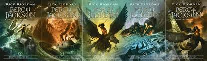

Percy Jackson and the Olympians is a five-part book series written by Rick Riordan that follows Percy Jackson, a young demigod son of Poseidon, as he navigates the modern world of Ancient Greece.
Each book follows Percy, along with other demigod and mythological creature characters, as they go on various quests and adventures to save Mount Olympus, the home of the Greek gods.
According to his website, Riordan spent years teaching Greek mythology at the middle school level. When his son, Haley, asked Riordan to read him bedtime stories about the myths, he was happy to do so. But eventually, he ran out of myths to tell, leaving him with one option: making up his own stories.
It was here where he began telling the story of Percy Jackson, a demigod hero on a Greek-style quest to recover Zeus' lighting bolt in modern-day America. After telling his son these stories, he spent the next year writing the first book in the series for publishing.
Additionally, Riordan made it a key characteristic for the demigods in his stories to have ADHD and dyslexia. During the writing process, his son was being tested for both, and this inspired Riordon to show those with the same learning differences that they can still be successful adults, even if they aren't the best at school.
"It's not a bad thing to be different," Riordan said in a Q&A on his website. "Sometimes, it's the mark of being very, very talented."
Click here to learn more about Riordan and his books!